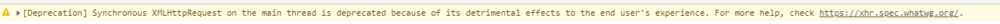

1：利用DOM获取该 div 的 ID，然后清空该DIV的内容（如果你需要接着里面的内容添加可不要清空）；需要注意点是清空最好用“ empty() ”；
2: 把 async设成true ,否则又一条警告的错误，这条错误导致你的内容显示不出来；下面就是警告的错误

3:就是添加HTML了。
具体代码如下：
<!DOCTYPE html>
<html>
<head>
<meta charset="utf-8">
<title>测试</title>
</head>
<body>
<div id="tset">
<a href="http://www.baidu.com">百度</a>
</div>
<button id="btn">测试</button>
</body>
<script src="../../Js/jquery-3.4.1.js">
</script><script src="../../Js/layer-v3.1.1/layer/layer.js"></script>
<script>
$(function(){
$("#btn").click(function(){
$.ajax({
url:'../../Html/JQueryDome/弹框.html',
dataType:'html',
type:'get',
async:true,
success:function(data){
console.log(data);
$("#tset").html(data)
},error:function(){
}
})
})
})
</script>
</html>
最后总结一下清空DIv的内容的方法
empty() 情况选择器里面的内容
语法 $(“选择器”).empty()
remove() 删除后再恢复事件不在
语法 $(“选择器”).remove()
detach() 删除后再恢复事件在
语法 $(“选择器”).detach()
顺便把其余的也给出来吧：
包裹
wrap() 每一个外面都添加一个新的元素
语法 $(“选择器”).wrap(“<元素名称>”)
wrapAll() 同一包裹一个元素
语法 $(“选择器”).wrap(“<元素名称>”)
wrapInner() 在里面添加一个新的元素
语法 $(“选择器”).wrap(“<元素名称>”)
unwrap() 去掉包裹
语法 $(“选择器”).wrap(“<元素名称>”)
外部插入
after() 在后面插 语法： $(“选择器”).after(“<元素名称>”)
insertAfter() 在后面插 语法： $(“选择器”).insertAfter(“<元素名称>”)
before 在后面插 语法： $(“选择器”).before(“<元素名称>”)
insertBefore() 在后面插 语法： $(“选择器”).insertBefore(“<元素名称>”)
内部插入(在)
append() 在后面插 语法： $(“选择器”).append(“<元素名称>”)
appendTo() 在后面插 语法： $(“<元素名称>”).appendTo(“选择器”)
prepend() 在前面插 语法： $(“选择器”).prepend(“<元素名称>”)
prependTo() 在前面插 语法： $(“<元素名称>”).prependTo(“选择器”)
替换
replaceWith() 语法 $(“选择器”).replaceWith($(“选择器”))
replaceAll 语法 $(“<元素名称>”).replaceAll (““选择器”
克隆
clone()
语法：1、$(“选择器”).clone().append(“元素名”)
2、$(“选择器”).append($(“元素名”).clone())
对了，还有一点就是（当然我是MVC中遇到的，不确定都有哟），就是在获取的网页中有内部JS，比如<script>这里是一个获取本地的时间函数</script>，然后当你执行AJAX时，页面不会添加到DIV中，整个页面就是是当前时间（但是地址没有变化）。解决办法：可以把该JS删除，或者该JS换成一个外部JS即可。